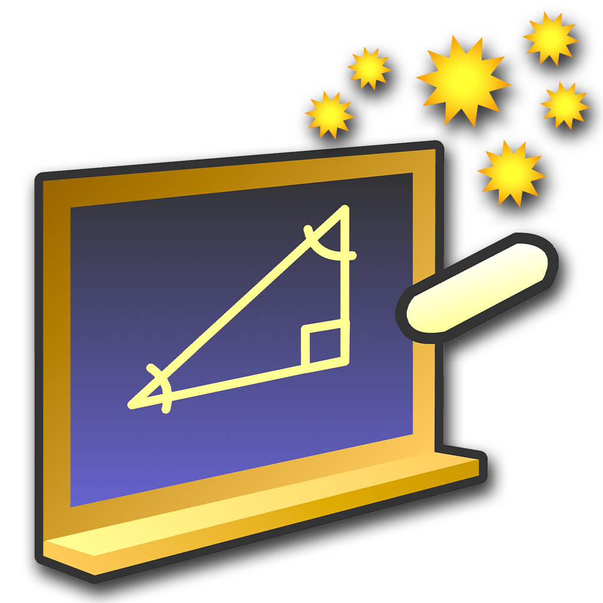
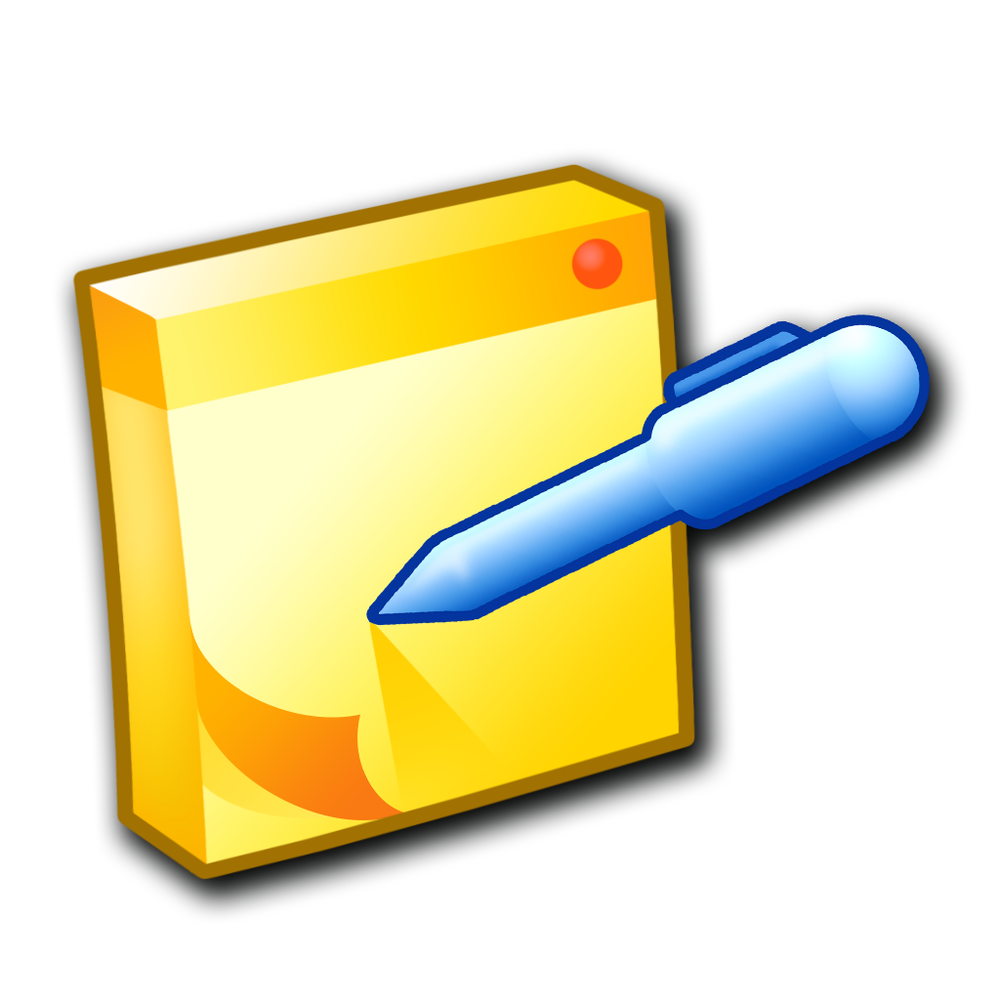

I am part of the CMS Production and Reprocessing Team. I monitor Monte Carlo
workflows and keep documentation updated.

My Research : Sneha Vireshwar DixitWhile the Standard Model of Particle Physics (SM) is the most widely-accepted framework for describing interactions between fundamental particles, it is only successful at low energy scales. It is still an incomplete theory. The SM Effective Field Theory (SMEFT) is a powerful, framework for parameterizing potential deviations of experimental observations from SM predictions. The SM Lagrangian is treated as the lowest order term in an expansion, with higher order terms suppressed by the energy scale of the new physics.
This makes SMEFT processes a potential searchlight for physics beyond the Standard Model. Top quarks are the heaviest particle in the standard model. The Large Hadron Collider is also a top-quark 'factory', producing the particle in vast quantities. This makes it an ideal candidate of study.
Currently, I am working on modernizing the TopEFT analysis by implementing a neural network to isolate effects due to specific Wilson Coefficients in the SMEFT Lagrangian. Thank you Andrew ( Wightman) for your patience with my endless questions.
As the particle physics community at CERN analyses mind-numbingly vast amounts of data in increasingly sophisticated ways, it becomes necessary to develop scalable tools and pipelines to streamline and improve physics outputs, analysis timelines, and computing efficiency. The IRIS-HEP Analysis Grand Challenge (AGC) aims to provide a scalable pipeline for the last steps of analysis, such as columnar data extraction, data processing, statistical inference, and visualization.
I tested and benchmarked the DASK client performance in the AGC 2024 pipeline as part of the 200GBPS challenge. I also created a sample analysis notebook for the 2024 AGC Pipeline with DASK and Coffea for ATLAS reference. This serves as a reference for analysis teams at ATLAS, so they can make use of the newly developed AGC tools in their analyses as well.
The Higgs Boson was the last 'missing piece' of the Standard Model of particle physics. Studying its properties is essential to understanding the nature of our universe. The ATLAS detector at the Large Hadron Collider collects vast amounts of data every second. Triggers help filter through this data and select events of potential physics interest.
As part of this project, I conducted a trigger study to select the most suitable triggers for a Di-Higgs analysis in the 0-lepton channel (which has a high branching fraction, but is hard to study due to the lack of leptons in the final state). Additionally, I also helped Dr. Suyog set up a particle physics lab for computer-based analysis at Washington College. I configured, benchmarked, and tested software and hardware for analysis.
Thank you Dr. Suyog. Thank you Rano, Tapas, and Jason - it was fun working with you.

Creating New NanoAOD Era for CMS OpenData : Summer 2022Event data used for most particle physics analyses is stored in ROOT files. Prior to this project, CMS OpenData ROOT files from before 2016 were stored in the outdated MiniAOD format ( which is still more recent than the AOD format).
As a USCMS PURSUE Intern, developed code to convert old CMS OpenData files to the NanoAOD format. I worked with ROOT, C++, and Python. The output files generated by this project are high quality, easy to process, and accessible to students and hobbyists working with CMS OpenData.
This experience marked a turning point in my undergraduate degree, and solidified my path towards a graduate degree in physics. I also discovered my love for using and developing tools that modernize physics analyses. Thank you to Dr. Sudhir Malik, Dr. Meenakshi Narain, and Guillermo.
Presentation Slides / Github Repository / Pull Request on CMSSW 10.6.X
Dark Matter sits uniquely at the intersection of particle physics and cosmology, and both are needed to understand the parameters that govern its behavior.
This project aimed to explore the properties of Weakly Interacting Massive Particle Dark Matter, and its interaction with Standard Model Particles using computer-based analytical methods. Over the course of this project, I build and solved a freeze-out model of WIMP Dark Matter using Wolfram Mathematica and the FeynCalc package.
This was my first and only experience with 'theoretical' physics. I learnt to use Wolfram Mathematica over the course of this period. This project turned into my undergraduate thesis.
Presentation Slides @ AstroPhilly 2022 / Poster / Undergraduate Thesis
The Higgs Boson is a rare particle - which makes events with two Higgs Bosons exponentially more elusive.
Di-Higgs collision signals suffer from a lot of noise due to the top-quark decay background signal, akin to searching for a needle in a haystack. This project involved simulating the top-quark background signal using different monte-carlo programs. The goal was to estimate the differences due to the different schemes in order to obtain some measure of the uncertainty on the top-quark background.
This was my first research experience, and it introduced me to a wide variety of tools and terms used in particle physics analyses, including but not limited to POWHEG, MC@NLO, HERWIG, PYTHIA, and using the LXPLUS cluster.